Objetivos
- Conocer el lenguaje HTML y sus características.
- Identificar los elementos que componen un documento HTML.
- Diferenciar entre etiquetas, atributos y elementos.
- Conocer las versiones de HTML y saber las diferencias con XHTML.
Introducción y contextualización práctica
El lenguaje HTML es aquel que entienden los navegadores y el que viaja a través de la red. Con este lenguaje se crean los documentos HTML que se almacenarán en el servidor web para que puedan ser accesibles en Internet.
Es muy importante conocer las características y las posibilidades que ofrece este lenguaje para realizar un proyecto acorde con las necesidades que se planteen en el diseño web.
A continuación, vamos a plantear un caso práctico, en el cual los protagonistas son Alberto y Gloria. Su objetivo es ayudarnos a aproximarnos de forma práctica a la teoría de este tema.
Alberto y Gloria son dos personajes que nos van a acompañar a lo largo del curso. Trabajan en la empresa Web Málaga Design.
El lenguaje de marcas HTML
El lenguaje de marcas HTML (HyperText Markup Language) nos permite crear páginas web que se podrán visualizar en un navegador web como Chrome o Mozilla.
Las páginas web estarán alojadas en un servidor y podremos acceder a ellas a través de una URL (Uniform Resource Locator). Esta URL es la que tenemos que indicar en el navegador para acceder al servidor y descargar una página web. En este caso, el navegador es el cliente, ya que este modelo responde a la filosofía cliente-servidor.
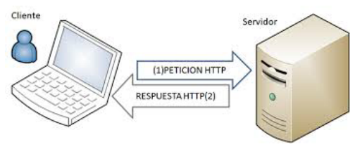
Las etiquetas que podremos utilizar en el documento HTML deben escribirse entre los símbolos < y >, y siempre deben estar emparejadas; es decir, deben tener una etiqueta de apertura y otra de cierre. La etiqueta de cierre se indica con el carácter barra (/).
<p>nombre de párrafo</p>Código 1. Sintaxis para delimitar un párrafo.
Cuando se trabaja con HTML, hay que tener en cuenta que:
- Existen algunas etiquetas que no requieren etiqueta de cierre, como
<hr>, que se utiliza para mostrar una línea horizontal, o<img>, para visualizar imágenes. En líneas generales, las etiquetas modifican el aspecto visual del texto, aunque existen etiquetas que no marcan ningún estilo. - HTML no diferencia entre mayúsculas y minúsculas. Por lo tanto, da igual indicar
<p>o<P>. Sin embargo, es una buena práctica poner las etiquetas en minúsculas. - Algunas etiquetas pueden anidarse, pero existen ciertas limitaciones en cuanto al tipo de etiquetas y al nivel de anidamiento.
<p>nombre de<b>párrafo</b></p>Código 2. Mostrar en negrita una palabra dentro de un párrafo.
- Un salto de línea, los espacios en blanco y los tabuladores no aportan nada en la visualización final del documento HTML; el navegador los pasa por alto.
<p>Esto es un ejemplo</p>
<p>Esto es un ejemplo</p>Código 3. Códigos que muestran lo mismo en el navegador.
2.1. Atributos y comentarios
Las etiquetas de apertura pueden contener uno o varios atributos, que nos permitirán indicar alguna característica de dicha etiqueta. Existen atributos generales para todas las etiquetas y otros específicos para cada una. Los atributos tendrán un valor que debemos indicar entre comillas. La sintaxis sería la siguiente:
<etiqueta atributo="valor_de_atributo">
<img src="andalucia_bandera.gif" alt="Andalucia">Código 4. Ejemplo de uso de la etiqueta <img>.
En este ejemplo se utiliza la etiqueta <img> para indicar que queremos incluir una imagen. El atributo src hace referencia al lugar donde se encuentra el fichero que contiene la imagen; con el atributo alt tendremos cierta información que se mostrará en el navegador cuando haya problemas a la hora de mostrar la imagen indicada.
A continuación, se recogen algunos de los atributos que se usan con frecuencia en HTML, aparte de los ya comentados.
| Atributo | Función |
|---|---|
disabled | Permite deshabilitar un elemento de un formulario en HTML. |
href | Indica la dirección web para un enlace. |
id | Identifica de manera única un elemento del documento HTML. |
style | Indica el estilo que se quiere aplicar a una etiqueta de HTML. |
title | Indica información extra sobre una etiqueta. |
La página web puede incluir comentarios que nos servirán para describir o documentar las partes que la componen. Esto es de suma utilidad cuando se trabaja con un grupo de personas o cuando retomamos el trabajo meses después. Los comentarios no se muestran en el navegador, se pueden incluir en cualquier parte del documento y deben estar incluidos entre los caracteres <!-- y -->.
<!-- Esto es un ejemplo de comentario -->
<p>Apartado de atributos y comentarios</p>Código 5. Ejemplo de comentario.
2.2. Elementos HTML
Además de etiquetas y atributos, en HTML nos encontramos con el concepto de elemento, que une etiquetas y contenido. Hay ocasiones en las que algunos textos hablan de «etiqueta» y «elemento» como si fueran lo mismo, y no es así. Un elemento es más que una etiqueta, porque está formado por:
- Etiqueta de apertura.
- Cero, uno o más atributos.
- Información encerrada entre las etiquetas.
- Etiqueta de cierre.
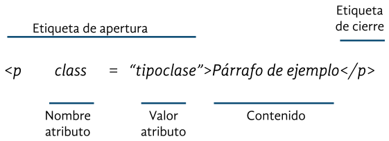
Este esquema representa un elemento de HTML, pues consta de una etiqueta de apertura (<p>), un atributo (class), el valor del atributo ("tipoclase"), contenido («Este es el texto que quiero incluir») y una etiqueta de cierre (</p>).
Los elementos HTML se pueden clasificar en dos grupos:
- En línea: solo ocupan el espacio necesario según su contenido. Por ejemplo, los enlaces son elementos en línea.
- De bloque: siempre comienzan en una nueva línea y ocupan el espacio hasta el final de esta, aunque su contenido no necesite llegar hasta el final. Por ejemplo, un párrafo es un elemento de bloque.
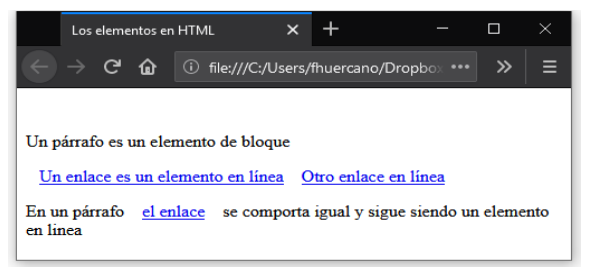
Caso práctico 1: «Atributos de la etiqueta IMG»
Planteamiento: Gloria comienza a realizar la página web encargada, pero no recuerda bien cómo se usaban los atributos ni si la etiqueta img, además de los atributos indicados en los apuntes, dispone de algunos más.
Nudo: Deberá investigar si la etiqueta img tiene más atributos y si son útiles para el desarrollo de la web. Gloria tiene que incluir varias imágenes en la página web y debe averiguar aspectos como tamaño, estilo, etc.
Desenlace: Tras consultar el contenido de la asignatura y buscar en Internet, Gloria encuentra esta información. La etiqueta img dispone de los siguientes atributos:
alt: indica un texto alternativo a la imagen.src: indica la URL donde se encuentra la imagen.height: indica la altura de la imagen en píxeles.width: indica el ancho de la imagen en píxeles.style: indica el estilo que se quiere aplicar. Este es un atributo general que también se puede utilizar en otras etiquetas.
Los dos primeros atributos ya los conocíamos, pero el resto son nuevos y nos van a permitir indicar el tamaño de la imagen en la web o el estilo que queremos aplicar. Con esta información, Gloria ya puede incluir su primera imagen en la web. El código que ha utilizado, así como el resultado, se muestran en las siguientes imágenes.
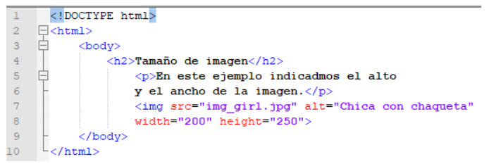
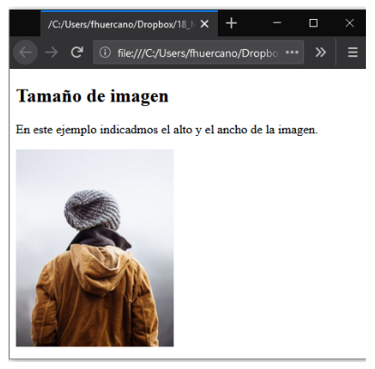
Versiones de HTML
A lo largo de la evolución de Internet, HTML también ha evolucionado y se han creado distintas versiones que define el organismo internacional W3C (World Wide Web Consortium). Como comentamos en el tema anterior, la primera versión es de 1991 y la desarrolló Tim Berners-Lee, considerado como el padre de la web. A partir de esa fecha han ido apareciendo las siguientes versiones:
| Versión HTML | Características |
|---|---|
| HTML 2.0 | Se publicó en 1995 y se simplificó al máximo su estructura para agilizar su diseño. No soporta tablas. |
| HTML 3.2 | Se publicó en 1997 y fue la primera recomendada por la W3C. Ya incluía tablas, applets de Java y diseños más avanzados. |
| HTML 4.01 | Se publicó en 1999 y aportaba novedades, tales como mejorar los formularios y poder añadir scripts, entre otras. |
| HTML 5 | Se publicó en 2014 y aporta nuevas etiquetas y la posibilidad de integrar audio y vídeo directamente sin plugins. Su característica principal es que aporta significado semántico. |
4.1. Navegadores y HTML
El navegador web es el programa que nos va a permitir visualizar la página web. Es el encargado de interpretar el código HTML que desarrollemos. Por lo tanto, es muy importante que no haya errores para que el navegador muestre nuestro documento HTML sin ningún problema.
Existen numerosos navegadores en el mercado, tales como Chrome, Mozilla, Safari, etc. Estos programas han evolucionado mucho y todos aportan extensiones que facilitan el diseño de páginas web. Cuando estamos visualizando una página web podemos acceder a su código HTML pulsando el botón derecho y eligiendo la opción «Ver código fuente de la página». El código fuente permite identificar las etiquetas utilizadas para crear el contenido.
4.2. Diferencia entre HTML y XHTML
Como vimos en el primer tema, XHTML es una adaptación del lenguaje HTML al lenguaje de marcas XML. Por ello, en el esquema aparece como descendiente de HTML.
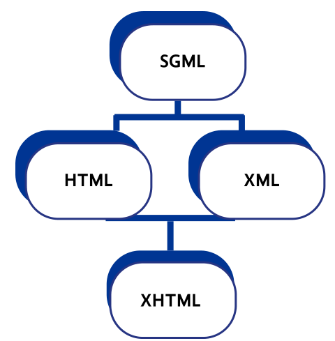
Las restricciones que tiene XHTML con respecto a HTML son las siguientes:
- Las etiquetas se tienen que cerrar en el mismo orden en el que se abrieron.
- Todos los nombres, tanto de las etiquetas como de los atributos, se deben escribir en minúsculas.
- Los valores de los atributos que se indican en la etiqueta de apertura deben ir entre comillas.
- No está permitido comprimir los atributos.
- Las etiquetas de apertura siempre deben tener su etiqueta de cierre.
En la actualidad existen dos versiones de XHTML, la 1.0 y la 1.1. La versión 1.0 se considera similar a HTML 4.0. Una de las diferencias principales de XHTML con respecto a HTML reside en su declaración en la cabecera. Una declaración tipo y los resultados de su validación se muestran en las siguientes imágenes:
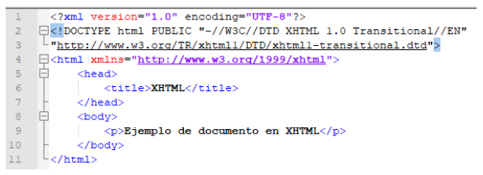
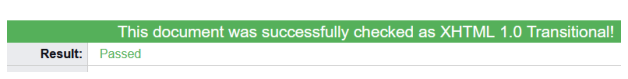
Si se cambia body por BODY, se obtiene el siguiente error, que no se tendría con HTML.
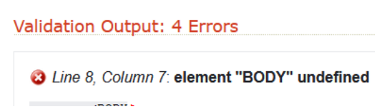
La validez de un documento XHTML se puede comprobar con un validador.
Caso práctico 2: «Validación de fichero XHTML»
Planteamiento: Alberto necesita buscar una herramienta que no esté online para poder saber si un documento XHTML es válido.
Nudo: Investiga la herramienta que indique errores con respecto a las restricciones que debe cumplir un documento XHTML. Es importante que no esté en línea, pues se va a utilizar en un entorno donde no siempre hay acceso a Internet.
Desenlace: Alberto se lo comenta a Gloria y ella le dice que ha usado XML Copy Editor, que permite saber si un documento está bien formado. Puede que este software también tenga una herramienta de validación. Gloria piensa que, al estar basado en XML, es muy probable que al pasarle el XHTML permita validarlo como si se tratara de un fichero XML.
Se descargan la aplicación y, efectivamente, comprueban que hay una opción de validación. En las siguientes pantallas se muestra el resultado con el mismo ejemplo utilizado anteriormente. A la hora de abrir el documento, hay que indicar que se trata de un fichero XHTML 1.0, como se muestra en la siguiente imagen:
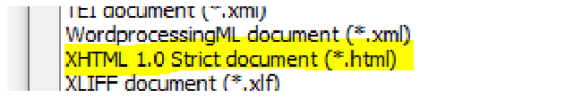
Para saber si el documento es válido, hay que pulsar en el botón «validar» que se encuentra en la parte superior del menú.
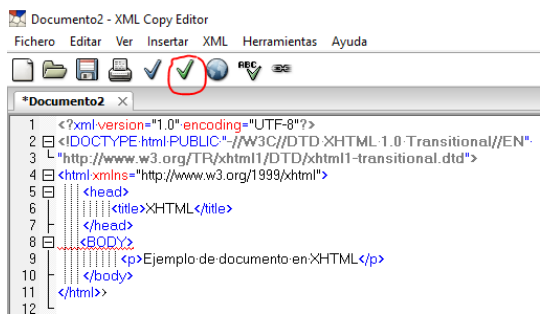
Al pulsar en ese botón obtenemos en la parte inferior el siguiente resultado:
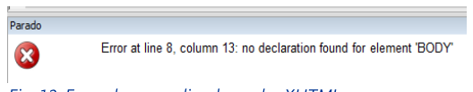
Para solucionarlo, habría que poner body en minúscula y se solucionaría el problema.
Herramientas de diseño web
En este apartado vamos a completar las herramientas de edición comentadas en el primer tema con herramientas de diseño web y otros recursos útiles para la creación de nuestras páginas web. Recursos para el diseño web:
- Colorzilla: extensión para Chrome que nos permite conocer el código exacto del color de un elemento de una página web, para luego poder utilizarlo en la nuestra.
- Google Fonts: base de tipografías gratuitas que podremos utilizar en nuestros diseños.
- WhatFont: permite averiguar la fuente utilizada en una página web para poder utilizarla en nuestros proyectos.
- MockFlow: permite crear un boceto de cómo queremos que quede nuestro diseño web.
- Pixabay: banco de imágenes de calidad.
- Iconfinder: fuente de iconos gratuitos.
- Gimp: programa de edición y retoque de imágenes que nos ayudará a adaptar las imágenes de nuestra web.
Como complemento a las herramientas de edición del primer tema, se añaden recursos que te ayudarán en el diseño web.
Sublime Text es un editor de texto avanzado y multiplataforma. Permite trabajar con varios documentos a la vez mediante pestañas. El resaltado de sintaxis soporta un gran número de lenguajes, entre ellos HTML y XML.
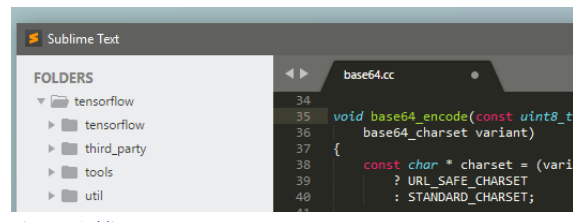
Resumen y resolución del caso práctico de la unidad
En este tema hemos visto las características principales del lenguaje HTML.
Hemos hecho una primera aproximación a cómo se deben utilizar las etiquetas y los atributos en el documento HTML.
También hemos hecho un recorrido por la evolución de HTML y hemos visto cómo el navegador web nos ayuda en la visualización del código fuente de una página web creada. Más adelante, veremos más herramientas de este tipo.
Es importante conocer las diferencias entre HTML y XHTML de cara a elegir un documento u otro. Por último, se han completado las herramientas de edición del tema 1 con herramientas de diseño web.
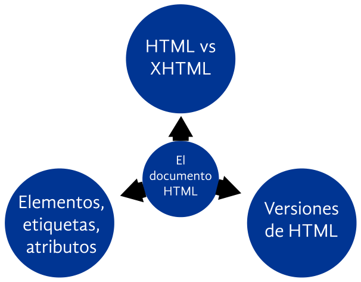
Resolución del caso práctico de la unidad
Alberto habla con Gloria y nos comentan:
«Gloria, HTML ha ido evolucionando con diferentes versiones a lo largo de los últimos 20 años. Resumiendo, te puedo decir que HTML, XHTML y HTML5 son lenguajes de marcado, y cada uno de ellos dispone de características comunes, pero también aspectos diferentes.
Tanto XHTML como HTML5 se crearon como versiones que mejoraban HTML4. XHTML fue diseñado para incorporar algunas características de XML, útiles para el control de la validación del documento, mientras que con la aparición de HTML5 aparecieron nuevas etiquetas, lo cual dotó de significado semántico a su estructura. Por este motivo, es la versión más adecuada.
Lo que tienes que tener claro es que los tres lenguajes son variaciones de HTML, pero incorporan diferentes reglas y características sintácticas. Te recomiendo que comiences por conocer las etiquetas básicas y el funcionamiento principal con HTML y, a medida que vayas entendiendo la filosofía del diseño web, continúes con el aprendizaje de HTML5 debido a su rápido crecimiento y funcionalidad mejorada.»